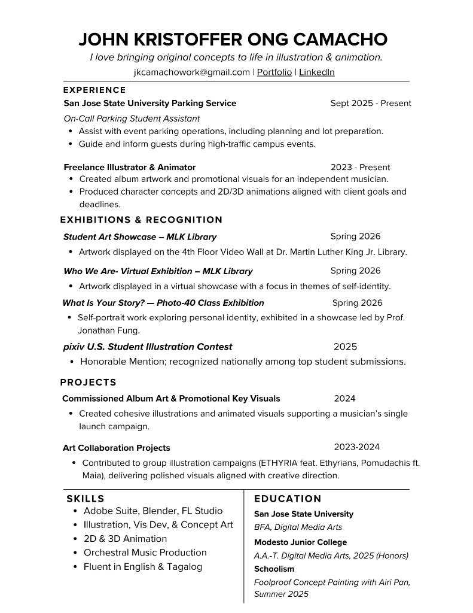

Bio
John is a 2D illustrator specializing in character illustration for games, animation, and VTubers. His work centers on visual storytelling, with a focus on conveying personality, emotion, and narrative through character-driven pieces.
He is currently pursuing a BFA in Digital Media Arts at San Jose State University, where he continues to refine his technical foundation while expanding his creative voice. Alongside his 2D practice, he plans to further specialize in 3D as part of his studies, integrating dimensional workflows into his approach to storytelling.
Having grown up in both the Philippines and Myanmar, John draws from a range of cultural influences that inform his perspective as an artist. His visual interests are shaped by anime, music, and narrative-based media, which continue to influence both his personal and academic work.
Through his practice, he explores the intersection of illustration, animation, and interactive media, with an interest in creating work that bridges multiple disciplines.
Artist statement
My work is driven by a need to understand my own experiences through creation.
Most of my pieces begin from personal moments, such as frustration or uncertainty, and develop into character-driven works that help me process those feelings. I focus on making work that feels honest first, rather than trying to meet expectations. Because of that, my work is less about presenting a final answer and more about documenting growth.
Growing up between the Philippines and Myanmar shaped how I approach storytelling. Being exposed to different cultures gave me a broader perspective, which continues to influence my work. I draw a lot of inspiration from anime, music, and narrative-based media, especially work that communicates emotion without relying on words. This led me to focus on character illustration as a way to explore identity and perception.
As a Digital Media Arts student at San Jose State University, my practice is expanding beyond 2D. Photography helped me better understand composition and framing, and that way of thinking has carried into my illustration work. Now, I am focusing more on 3D.
I plan to specialize in Blender for modeling and rigging, to build a strong 3D-focused practice during my time in the BFA program. I am also taking supplemental lessons outside of school to improve my skills in rigging and animation. My goal is to create a 3D-focused capstone project that reflects both my technical growth and creative direction.
At the same time, I am interested in experimenting across different mediums. I have started exploring music production and working with various software to translate sound into digital data. I have also begun experimenting with RAW data and converting it into MIDI-based music. I am interested in how different types of data can be transformed and used creatively.
This also connects to my interest in motion capture. I want to explore new and experimental ways to integrate and interpret motion capture data, not just as a technical tool, but as part of the creative process.
I am also interested in collaborating with students in other disciplines such as music, film, and animation. The kind of work I want to create often exists between mediums, and collaboration allows those ideas to grow beyond what I can do on my own.
Overall, my goal is to expand both my skillset and perspective during my time in the DMA BFA program. I want to develop work that bridges 2D and 3D, while contributing to the growing use of 3D in games, animation, and VTuber culture.
My practice is about learning, experimenting, and continuing to grow.
Focus & Skills
- Digital Illustration & Concept Art
- 2D & 3D Animation
- 3D Modeling & Rigging
Tools
- Adobe Suite
- Blender
- FL Studio
- Procreate & Clip Studio Paint
- Twine, HTML/CSS, p5js, & Bootstrap
- Traditional Mediums
Education
- B.F.A Digital Media Arts, San José State University Honors (In Progress)
- AAT Modesto Junior College Honors (2025)
Interests
- Games, anime, and visual storytelling
- Character-driven worlds and narrative design
- Mixing traditional and digital media
- Classical, Orchestral Music, & Music Production
Publications
Exhibitions
- Who We Are: Virtual Reality Art Exhibit By DHC 04.26
- Student Art Showcase By DHC 03.26
- What Is Your Story-? Photo-40 Class Exhibition 03.26
hey! let’s work
together
Work
Interested in collaborating on illustration, concept work, or digital media projects? I’d love to hear about it.
For inquiries, please email me at jkcamachowork@gmail.com.
View Resume

You can also download my resume here: Resume
{kind=link}
Questions
If you have questions about my work, process, or projects, feel free to reach out. I’m always open to conversations about art, games, and storytelling.
More work can be found throughout this portfolio and on my social links below.